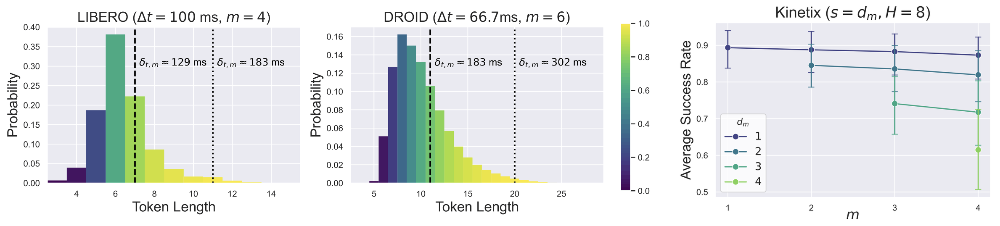
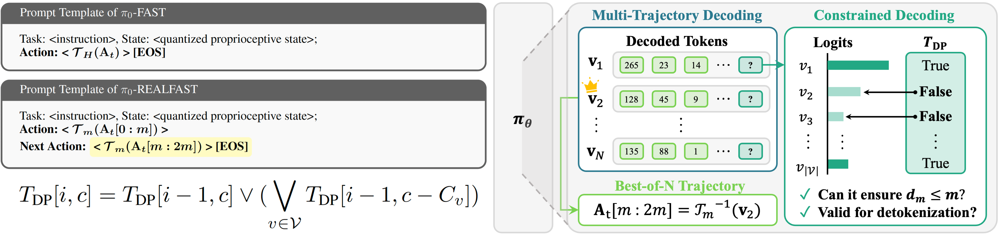
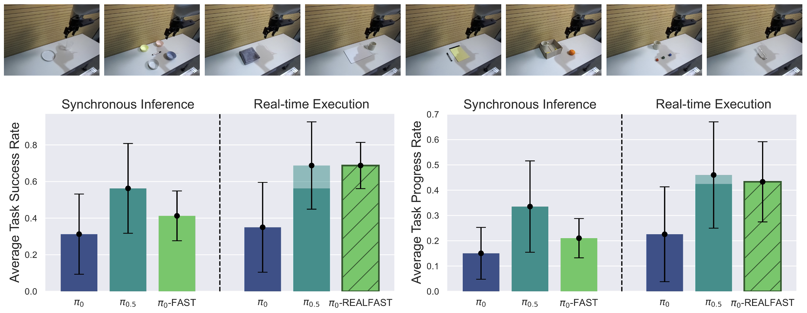
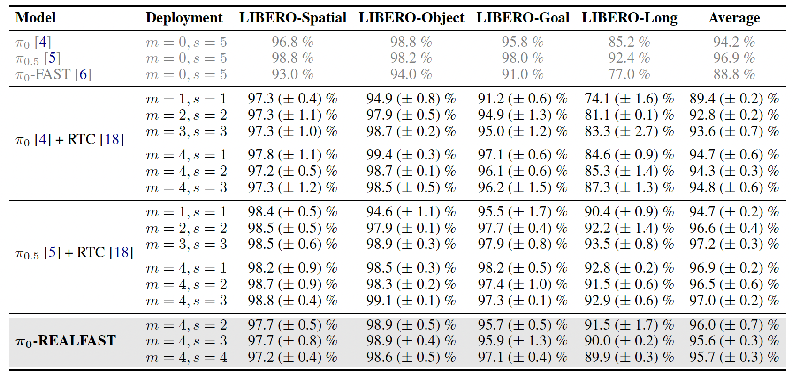

Real-Time Execution with Autoregressive Policies
TL;DR: Autoregressive policies can support real-time execution, despite having relatively high inference latency. This is because it depends not on the inference delay itself, but on the guarantee of a continuous stream of actions from the policies. In this sense, we demonstrate how to tailor autoregressive policies to achieve successful real-time execution.
When Do We Achieve the Real-time Execution?
Generally, the modifier real-time follows after the system that can guarantee a response within a predefined time limit.
Then, for a robot controller that expects the endpoint robot to operate continuously, except when the policy $\pi_\theta$ induces a pause in its intention, real-time execution can be defined as a scenario in which the policy can provide an action $\mathbf{a}_t$ at every timestamp $t$.
When can real-time execution be achieved in a policy using Vision-Language Action models (VLAs), which adopt open-loop control because of inference latency generally higher than the command interval $\Delta t$? One intuitive solution is to maintain the action queue $\mathbf{A}_Q$, which stores the actions the controller will consume, as nonempty for all $t$. Specifically, given the non-modifiable horizon $m$, which is the prefix length of $\mathbf{A}_Q$ that the policy cannot modify, the delay $d_m$ for supplying a new $m$-length action chunk must be the same or shorter than $m$ in repeated asynchronous inference with execution horizon $s$: $$ d_m \le s \le m $$ Real-time execution enables faster rollout speed by eliminating the pausing time in synchronous inference. However, this also reveals that it is independent of the reactivity or the smoothness between the actions the controller consumes during the delay and the newly supplied action chunk; it is simply enough to guarantee $\boldsymbol{d_m \le m}$ for achieving real-time execution.
When can real-time execution be achieved in a policy using Vision-Language Action models (VLAs), which adopt open-loop control because of inference latency generally higher than the command interval $\Delta t$? One intuitive solution is to maintain the action queue $\mathbf{A}_Q$, which stores the actions the controller will consume, as nonempty for all $t$. Specifically, given the non-modifiable horizon $m$, which is the prefix length of $\mathbf{A}_Q$ that the policy cannot modify, the delay $d_m$ for supplying a new $m$-length action chunk must be the same or shorter than $m$ in repeated asynchronous inference with execution horizon $s$: $$ d_m \le s \le m $$ Real-time execution enables faster rollout speed by eliminating the pausing time in synchronous inference. However, this also reveals that it is independent of the reactivity or the smoothness between the actions the controller consumes during the delay and the newly supplied action chunk; it is simply enough to guarantee $\boldsymbol{d_m \le m}$ for achieving real-time execution.
Are Autoregressive Policies Reasonable for Real-time Execution?

$\boldsymbol{\pi_0}$-FAST, which is a representative of modern autoregressive VLAs, has advantages such as faster convergence and better generalizability in instruction following, but also shows the disadvantage of higher inference latency due to sequential decoding.
Therefore, given that longer pausing time from longer inference latency leads to slower rollout speed in synchronous inference, real-time execution plays an important role to retain only the advantage of autoregressive policies.
In the real-time execution, inference latency is tied to reactivity rather than to pausing time; we must examine whether reasonable reactivity can be achieved while achieving real-time execution. However, we must note that real-time execution requires only maintaining $d_m \le m$, regardless of the choice of $\boldsymbol{m}$. In other words, we can adjust the tokenization horizon $m \cdot \Delta t$ to reduce decoding steps that govern the inference latency $\delta_{t, m}$, and we can secure a reasonable level of average $\delta_{t, m}$. In particular, since the effect of $d_m < m$ from tokenization has a smaller impact on performance than the effect of increased $d_m$, autoregressive policies can also support reasonable real-time execution by selecting an appropriate tokenization horizon.
In the real-time execution, inference latency is tied to reactivity rather than to pausing time; we must examine whether reasonable reactivity can be achieved while achieving real-time execution. However, we must note that real-time execution requires only maintaining $d_m \le m$, regardless of the choice of $\boldsymbol{m}$. In other words, we can adjust the tokenization horizon $m \cdot \Delta t$ to reduce decoding steps that govern the inference latency $\delta_{t, m}$, and we can secure a reasonable level of average $\delta_{t, m}$. In particular, since the effect of $d_m < m$ from tokenization has a smaller impact on performance than the effect of increased $d_m$, autoregressive policies can also support reasonable real-time execution by selecting an appropriate tokenization horizon.
How Can We Tailor Autoregressive Policies for Real-time Execution?

Therefore, after a reasonable choice of $m \cdot \Delta t$, the factors we need to consider are the smoothness of the action trajectory, the guarantee of real-time execution, and performance maximization.
We apply simple modifications and fine-tuning to $\pi_0$-FAST, denoted as $\boldsymbol{\pi_0}$-REALFAST, and demonstrate real-time execution with autoregressive policies by following approaches:
1. Separately tokenize action chunk horizon $\boldsymbol{H}\mathbf{=2}\boldsymbol{m}$ to enable conditioning on near-future actions in $\mathbf{A}_\boldsymbol{Q}$ for smoothness.
2. Minimize idle computation time from synchronization by sampling multiple trajectories marginally increases latency.
3. Introduce constrained decoding based on dynamic programming, which guarantees decoding actions within $\boldsymbol{d_m}\,\mathbf{\le}\,\boldsymbol{m}$.
1. Separately tokenize action chunk horizon $\boldsymbol{H}\mathbf{=2}\boldsymbol{m}$ to enable conditioning on near-future actions in $\mathbf{A}_\boldsymbol{Q}$ for smoothness.
2. Minimize idle computation time from synchronization by sampling multiple trajectories marginally increases latency.
3. Introduce constrained decoding based on dynamic programming, which guarantees decoding actions within $\boldsymbol{d_m}\,\mathbf{\le}\,\boldsymbol{m}$.
Across LIBERO environment and DROID zero-shot deployment, we confirm that $\pi_0$-REALFAST achieves faster rollout speed and better performance while maintaining the original advantages of faster convergence and better generalizability in instruction following, as demonstrated by $\pi_0$-FAST.
In particular, $\pi_0$-REALFAST shows superior performance compared to the real-time execution of $\pi_0$, an equivalent-level flow-matching policy using a small action expert, while approaching performance comparable to the successor model, $\pi_{0.5}$.
This demonstrates that autoregressive policies remain a competitive policy type by overcoming the disadvantage of slow rollout speed with appropriate considerations for real-time execution.


Citation
@article{lee2026real,
title={Real-Time Execution with Autoregressive Policies},
author={Lee, Sangkyu and Park, Seohyeon and You, Tackgeun and Caciularu, Avi and Szpektor, Idan and Lim, Hwasup and Yu, Youngjae},
journal={arXiv preprint arXiv:2606.13355},
year={2026}
}